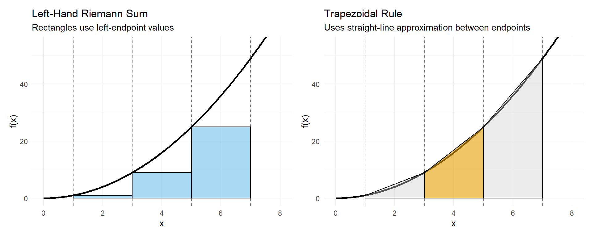
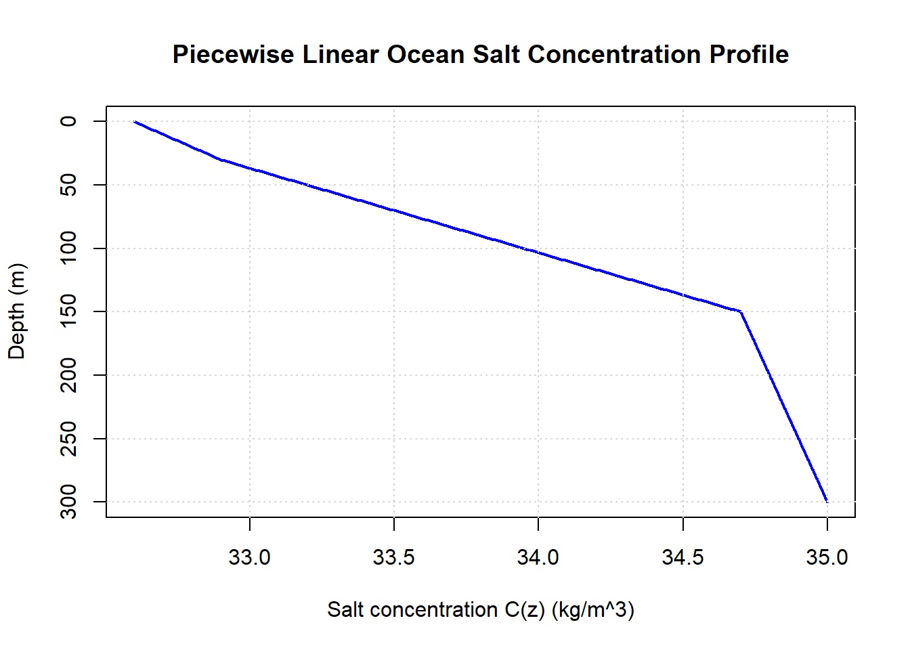

Chapter 10 Week 2 In-Class: Riemann Sums → Derivatives → Antiderivatives
10.1 Trapezoidal Rule
The idea here is approximate the area under the curve using the area of a trapezoid.

Key Idea
We are following the same procedure as we did for Riemann Sums. The key differences
- Need a new expression for the area
The area \(A\) of a trapezoid is given by
\[ A = \frac{1}{2}(b_1 + b_2)h \]
where:
- \(b_1\) and \(b_2\) are the lengths of the two parallel sides (the bases),
- \(h\) is the height, the perpendicular distance between the bases.
What could be replace \(b_1\) and \(b_2\) with?
10.2 Problem: Approximating an Integral with the Trapezoid Rule
Let
\[
f(x) = x^2
\]
on the interval \([1,7]\).

Use the Trapezoid Rule with \(n = 3\) subintervals to approximate \[ \int_{1}^{7} f(x)\,dx. \]
10.2.1 Step 1: Set Up the Riemann Sum Framework
The trapezoid rule is built from a Riemann sum, where the interval \([a,b]\) is divided into \(n\) equal subintervals of width \[ \Delta x = \frac{b-a}{n}. \]
For this problem: \[ \Delta x = \]
10.2.2 Step 2: Identify the \(x_i\) and \(f(x_i)\) Values
The partition points (also called nodes) are defined by \[ x_i = a + i\Delta x, \quad i = 0,1,2,\dots,n. \]
Using \(a=1\) and \(\Delta x=2\): \[ \begin{aligned} x_0 &= \\ x_1 &= \\ x_2 &= \\ x_3 &= \end{aligned} \]
These \(x_i\) values mark the endpoints of each trapezoid.
10.2.3 Step 3: Trapezoid Rule as a Riemann Sum
The trapezoid rule can be written as a weighted Riemann sum: \[ T_n = \frac{\Delta x}{2} \left[ f(x_0) + 2f(x_1) + 2f(x_2) + \cdots + 2f(x_{n-1}) + f(x_n) \right]. \]
Important observations:
- The first and last function values are counted once
- All interior function values are counted twice
10.2.4 Step 4: Why This Formula Represents Trapezoids
On each subinterval \([x_{i-1}, x_i]\), the area is approximated by a trapezoid with:
- Base width: \(\Delta x\)
- Parallel sides: \(f(x_{i-1})\) and \(f(x_i)\)
The area of a single trapezoid is \[ \text{Area}_i = \frac{1}{2}\left[f(x_{i-1}) + f(x_i)\right]\Delta x. \]
Summing the areas of all trapezoids gives \[ \sum_{i=1}^{n} \frac{1}{2}\left[f(x_{i-1}) + f(x_i)\right]\Delta x, \] which simplifies to the trapezoid rule formula above.
10.3 Definite Integrals and the Fundamental Theorem of Calculus
In the previous chapter, you developed an intuition for accumulation by approximating totals from rates using rectangles, tables, and graphs. You saw how adding up many small contributions can represent meaningful environmental quantities such as total rainfall, streamflow, carbon exchange, or pollutant transport. You also encountered the idea of signed accumulation, where gains and losses can offset each other over time.
This chapter formalizes those ideas.
Here, we move from “adding rectangles makes sense” to “integrals are well-defined mathematical objects with powerful and reliable properties.” You will learn how mathematicians define accumulation precisely, why different approximation methods converge to the same value, and how integrals connect directly back to derivatives through one of the most important results in calculus.
Rather than treating integrals as a new collection of formulas, this chapter emphasizes meaning first. Computation matters, but it is grounded in interpretation: what a definite integral represents, how it behaves, and why it works.
By the end of this chapter, you should clearly understand:
- what a definite integral is and how it arises from limits of Riemann sums
- why a definite integral represents accumulation, not just area
- how integration and differentiation are connected
- how to compute definite integrals efficiently without losing meaning
10.4 From Riemann Sums to Definite Integrals
In the previous chapter, you learned how to approximate accumulation by adding up rectangles under a rate curve. These approximations—left, right, midpoint, and trapezoidal—allowed you to estimate totals from discrete measurements and to reason carefully about overestimates, underestimates, and conservativeness.
In this section, we take the next conceptual step:
Riemann sums are a process.
The definite integral is the result of that process.
10.4.1 Riemann Sums as Structured Approximations
A Riemann sum is a structured way to approximate accumulation:
- Partition an interval \([a,b]\)
- Choose a representative rate in each slice
- Multiply rate by width
- Add all contributions
This mirrors how environmental data are handled in practice: discrete measurements represent continuous processes.
10.4.2 From Finite Sums to a Limit
A Riemann sum has the form: \[ \sum_{i=1}^n f(x_i^*)\Delta x \]
As \(n \to \infty\), rectangles become thinner and approximation error shrinks.
10.5 Evaluating a Definite Integral (Step by Step)
Before learning shortcut rules for integrals, it is essential to practice the core process used to evaluate a definite integral. This section will guide you through that process one step at a time, with checkpoints to help you reflect on what each step means.
10.5.1 What does a definite integral represent?
A definite integral, \[ \int_a^b f(x)\,dx, \] represents the net accumulation of a quantity whose rate or density is given by \(f(x)\) over the interval \([a,b]\).
10.5.2 Step 1: Identify the function being accumulated
Consider the integral: \[ \int_1^4 x^2\,dx. \]
Checkpoint 1
What is the function being accumulated?
Over what interval does the accumulation occur?
Function: __________________________
Interval: __________________________
10.5.3 Step 2: Find an antiderivative
To evaluate a definite integral, you first need an antiderivative.
An antiderivative of \(f(x)\) is a function \(F(x)\) such that
\[ F'(x) = f(x). \]
Practice
Find an antiderivative of: \[ f(x) = x^2 \]
\[ F(x) = \rule{6cm}{0.15mm} \]
(Do not include a constant of integration.)
10.5.4 Step 3: Evaluate the antiderivative at the bounds
Next, evaluate your antiderivative at the upper bound and the lower bound.
Upper bound:
\[ F(4) = \rule{6cm}{0.15mm} \]
Lower bound:
\[ F(1) = \rule{6cm}{0.15mm} \]
10.5.5 Step 4: Subtract to find the net accumulation
The value of the definite integral is found by subtracting: \[ \int_1^4 x^2\,dx = F(4) - F(1). \]
Compute the difference:
\[ F(4) - F(1) = \rule{6cm}{0.15mm} \]
10.5.6 Step 5: Interpret the result
Your final answer represents the total accumulated amount of \(x^2\) from \(x=1\) to \(x=4\).
Reflection questions
- Is your result positive or negative? Why does that make sense?
- Would your answer change if you added a constant \(C\) to the antiderivative? Why or why not?
\[ \rule{12cm}{0.15mm} \]
10.6 Why there is no constant of integration
Suppose your antiderivative had included a constant \(C\): \[ F(x) + C. \]
When evaluating the definite integral, you would compute: \[ (F(4) + C) - (F(1) + C). \]
Checkpoint 2
- What happens to the constant \(C\)?
- What does this tell you about definite integrals?
\[ \rule{12cm}{0.15mm} \]
10.7 Summary: The Evaluation Process
Every definite integral is evaluated using the same three-step process:
- Find an antiderivative
- Evaluate it at the upper and lower bounds
- Subtract to find net accumulation
10.8 Properties of Definite Integrals
10.8.1 Linearity
\[ \int_a^b [f(x)+g(x)]dx = \int_a^b f(x)dx + \int_a^b g(x)dx \]
\[ \int_a^b c f(x)\,dx = c\int_a^b f(x)\,dx \]
Linearity reflects additive physical processes.
10.9 The Fundamental Theorem of Calculus (Part I)
Define an accumulation function: \[ A(x) = \int_a^x f(t)\,dt \]
Then: \[ A'(x) = f(x) \]
The rate of change of accumulation equals the original rate.
10.10 The Fundamental Theorem of Calculus (Part II)
If \(F'(x)=f(x)\), then: \[ \int_a^b f(x)\,dx = F(b) - F(a) \]
This works because accumulation functions are antiderivatives.
Worked Example
Suppose carbon flux is modeled by: \[ f(t)=3t^2 + 7 \quad \text{(kg/hr)} \]
Find net carbon exchange from \(t=1\) to \(t=4\).
Antiderivative:
Evaluate:
10.13 Practice: Properties of Definite Integrals & the Fundamental Theorem of Calculus
These problems are designed to help you practice using the properties of definite integrals and the Fundamental Theorem of Calculus in a purposeful way.
As you work, ask yourself: - Can I simplify this integral before computing? - Does the sign of the rate matter? - What does the result represent physically?
10.14 Practice Set A: Linearity and Constants
10.14.1 A1. Using Linearity
Let \[ f(t) = 5t^2 - 4t + 6. \]
Rewrite the integral using linearity: \[ \int_0^2 (5t^2 - 4t + 6)\,dt \]
Identify which term you expect to contribute the most to the total accumulation.
Evaluate the integral.
10.14.2 A2. Constant Multiple Rule
Suppose nutrient uptake is modeled by \[ N(t) = 12(0.5t^2 + 1) \quad \text{(mg/day)}. \]
- Rewrite the integral by factoring out the constant.
- Evaluate \[ \int_0^3 N(t)\,dt. \]
- Interpret your answer, including units.
10.14.3 A3. Accumulation with an Exponential Rate
Suppose the rate of carbon uptake by vegetation is modeled by \[ C(t) = 4e^{t} + 2 \quad \text{(kg/day)}. \]
Use linearity to rewrite the integral \[ \int_0^2 (4e^{t} + 2)\,dt \] as a sum of two simpler integrals.
Evaluate each integral and compute the total carbon uptake over \([0,2]\).
Interpret your result, including units.
10.14.4 A4. Comparing Exponential and Linear Growth
Consider two accumulation processes over the interval \([0,2]\):
\[ f(t) = 4t + 2 \qquad g(t) = 4e^{t} + 2. \]
Compute \[ \int_0^2 f(t)\,dt \quad \text{and} \quad \int_0^2 g(t)\,dt. \]
Which process leads to greater total accumulation?
Explain why exponential rates can produce much larger accumulation even over short time intervals.
10.15 Practice Set B: Signed Accumulation and Additivity
10.15.1 B1. Positive vs. Negative Contributions
A wetland’s net nutrient flux is modeled by \[ R(t) = 6 - 2t \quad \text{(kg/day)}. \]
- Determine when the rate is positive and when it is negative.
- Sketch a graph of the rate.
- Split the integral at the appropriate time.
- Compute:
- total nutrient input
- total nutrient removal
- net nutrient change on \([0,5]\)
- total nutrient input
10.15.2 B2. Same Net Change, Different Behavior
Two systems are observed over the interval \([0,4]\).
System A: \[ f(t) = 2 - t \]
System B: \[ g(t) = \sin\!\left(\frac{\pi t}{2}\right) \]
- Compute the net change for each system.
- Compare the total amount exchanged in each system.
- Explain how two systems can have the same net change but behave very differently.
10.16 Practice Set C: Accumulation Functions (FTC Part I)
10.17 Practice Set D: Evaluating Definite Integrals Using FTC Part II
10.17.1 D1. Two Approaches to Net Change
Let \[ f(t) = t^2 - 4t. \]
- Identify where the rate is positive and where it is negative.
- Compute the net change on \([0,5]\) by:
- splitting the interval where the sign changes
- using an antiderivative and FTC Part II
- splitting the interval where the sign changes
- Explain why both approaches give the same result.
10.18 Conceptual Reflection
Answer in complete sentences.
- Why are Riemann sums considered a process rather than a final result?
- When is it useful to split an integral before computing it?
- Can a system experience large total exchange but small net change? Explain.
- What information does a definite integral not provide on its own?
10.19 Practice Set E
10.19.1 E1. Linearity (Sum and Difference)
- Suppose
\[ \int_{2}^{6} f(x)\,dx = 5 \quad \text{and} \quad \int_{2}^{6} g(x)\,dx = -3. \]
Evaluate: \[ \int_{2}^{6} [f(x) + g(x)]\,dx \]
- Given
\[ \int_{-1}^{3} h(x)\,dx = 7, \]
find: \[ \int_{-1}^{3} [h(x) - 4]\,dx \]
- Let
\[ \int_{0}^{4} p(x)\,dx = 6 \quad \text{and} \quad \int_{0}^{4} q(x)\,dx = 10. \]
Compute: \[ \int_{0}^{4} [3p(x) - 2q(x)]\,dx \]
10.19.2 E2. Constant Multiple Rule
- If
\[ \int_{1}^{5} r(x)\,dx = -2, \]
evaluate: \[ \int_{1}^{5} 6r(x)\,dx \]
- Given
\[ \int_{-2}^{2} f(x)\,dx = 9, \]
find: \[ \int_{-2}^{2} \tfrac{1}{3} f(x)\,dx \]
10.19.3 E3. Additivity Over Intervals
- Suppose
\[ \int_{0}^{3} f(x)\,dx = 4 \quad \text{and} \quad \int_{3}^{7} f(x)\,dx = -1. \]
Find: \[ \int_{0}^{7} f(x)\,dx \]
- You are told that
\[ \int_{1}^{4} g(x)\,dx = 6 \quad \text{and} \quad \int_{1}^{2} g(x)\,dx = 2. \]
Determine: \[ \int_{2}^{4} g(x)\,dx \]
10.20 Practice Set F: Indefinite Integrals
For each problem, find the most general antiderivative.
Be sure to include the constant of integration \(C\).
10.22 Practice Set A: Linearity and Constants
10.22.1 A1. Using Linearity
Let \(f(t)=5t^2-4t+6\).
Rewrite using linearity \[ \int_0^2 (5t^2-4t+6)\,dt = 5\int_0^2 t^2\,dt -4\int_0^2 t\,dt +6\int_0^2 1\,dt. \] Guidance: Split into simpler integrals and pull constants out.
Largest contributor The term \(5t^2\).
Guidance: On \([0,2]\), \(t^2\) grows faster than \(t\) or a constant, so it tends to dominate.Evaluate \[ \int_0^2 (5t^2-4t+6)\,dt = \left[\frac{5}{3}t^3-2t^2+6t\right]_0^2 = \frac{40}{3}. \] Guidance: Use an antiderivative and evaluate at the bounds (FTC Part II).
10.22.2 A2. Constant Multiple Rule
\(N(t)=12(0.5t^2+1)\) (mg/day)
Factor out the constant \[ \int_0^3 N(t)\,dt = 12\int_0^3 (0.5t^2+1)\,dt. \] Guidance: A constant multiplier can be pulled outside the integral.
Evaluate [ 12_0^3 (0.5t^2+1),dt = 12_0^3 = 12(+3) = 12(7.5) =
] So, \[ \int_0^3 N(t)\,dt = 90\ \text{mg}. \] Guidance: Integrate the simpler expression first, then multiply by 12.
Interpretation (with units) Total nutrient uptake over 3 days is 90 mg.
Guidance: Integrating mg/day over days gives mg (a total amount).
10.22.3 A3. Accumulation with an Exponential Rate
\(C(t)=4e^t+2\) (kg/day)
- Rewrite as a sum
\[ \int_0^2 (4e^t+2)\,dt = 4\int_0^2 e^t\,dt + 2\int_0^2 1\,dt. \]
Guidance: Use linearity to split the exponential part from the constant part.
- Evaluate and total
\[ 4\int_0^2 e^t\,dt = 4\left[e^t\right]_0^2 = 4(e^2-1), \qquad 2\int_0^2 1\,dt = 2[t]_0^2 = 4. \] Total: \[ \int_0^2 (4e^t+2)\,dt = 4(e^2-1)+4 = 4e^2. \]
Guidance: \(\int e^t dt=e^t\) and \(\int 1 dt=t\).
- Interpretation (with units)
Total carbon uptake over \([0,2]\) is \(4e^2\) kg (approximately \(29.6\) kg).
Guidance: A rate in kg/day integrated over days gives total kg.
10.22.4 A4. Comparing Exponential and Linear Growth
\(f(t)=4t+2\), \(g(t)=4e^t+2\) on \([0,2]\)
- Compute both totals
\[ \int_0^2 f(t)\,dt = \int_0^2 (4t+2)\,dt = \left[2t^2+2t\right]_0^2 = 8+4 = 12. \]
\[ \int_0^2 g(t)\,dt = \int_0^2 (4e^t+2)\,dt = 4e^2 \approx 29.6. \]
Guidance: Use FTC Part II to evaluate each definite integral.
Which is greater? The exponential process \(g(t)\) produces greater accumulation.
Guidance: Exponential growth accelerates, so the area under the curve increases quickly.Why exponential can be much larger Because \(e^t\) increases at an increasing rate (its slope increases as \(t\) increases), the accumulated area grows faster than for a linear rate.
Guidance: A “steepening” rate creates disproportionately more area toward the right end of the interval.
10.22.5 Concept Check (Exponential Rates) — No Computation
- Shape effect: Since \(e^t\) curves upward (increasing slope), the accumulation grows faster than a linear rate that increases at a constant slope.
- Slightly longer interval: A small increase in interval length adds a disproportionately large amount of accumulation because the rate is much larger near the right endpoint.
10.23 Practice Set B: Signed Accumulation and Additivity
10.23.1 B1. Positive vs. Negative Contributions
\(R(t)=6-2t\) (kg/day)
When positive/negative \[ 6-2t>0 \Rightarrow t<3, \quad 6-2t<0 \Rightarrow t>3, \quad R(3)=0. \] Guidance: Solve \(R(t)=0\) to find the sign-change time.
Sketch (description) A straight line with intercept \(R(0)=6\), slope \(-2\), crossing the \(t\)-axis at \(t=3\).
Guidance: Linear rate decreases steadily and crosses zero once.Split the integral
\[ \int_0^5 R(t)\,dt = \int_0^3 (6-2t)\,dt + \int_3^5 (6-2t)\,dt. \]
Guidance: Split where the rate changes sign to separate input vs removal.
- Compute input, removal, net Total input (where \(R>0\)): \[ \int_0^3 (6-2t)\,dt = \left[6t-t^2\right]_0^3 = 18-9 = 9\ \text{kg}. \]
Net change on \([0,5]\): \[ \int_0^5 (6-2t)\,dt = \left[6t-t^2\right]_0^5 = 30-25 = 5\ \text{kg}. \]
Total removal (magnitude of negative part):
\[
\text{removal} = 9-5 = 4\ \text{kg}.
\]
(Equivalently, \(\int_3^5 (6-2t)\,dt=-4\) kg, so removal is \(4\) kg.)
Guidance: Net = input − removal, and the negative integral gives the signed removal.
10.23.2 B2. Same Net Change, Different Behavior
System A: \(f(t)=2-t\)
System B: \(g(t)=\sin\left(\frac{\pi t}{2}\right)\) on \([0,4]\)
- Net change
System A:
\[ \int_0^4 (2-t)\,dt = \left[2t-\frac{t^2}{2}\right]_0^4 = 8-8 = 0. \]
System B: Let \(u=\frac{\pi t}{2}\), so \(dt=\frac{2}{\pi}du\), and \(t:0\to 4\) maps to \(u:0\to 2\pi\): \[ \int_0^4 \sin\left(\frac{\pi t}{2}\right)\,dt = \frac{2}{\pi}\int_0^{2\pi}\sin(u)\,du = \frac{2}{\pi}\left[-\cos(u)\right]_0^{2\pi} = 0. \] Guidance: Net change is the signed area; both cancel to zero.
- Total amount exchanged System A: Positive on \([0,2]\), negative on \([2,4]\). \[ \text{Total exchange}=\int_0^2 (2-t)\,dt + \int_2^4 (t-2)\,dt = 2+2=4. \]
System B:
Over one full period, positive on \([0,2]\), negative on \([2,4]\), and symmetric:
\[
\text{Total exchange}=\int_0^4 \left|\sin\left(\frac{\pi t}{2}\right)\right|dt
=
2\int_0^2 \sin\left(\frac{\pi t}{2}\right)dt
=
2\cdot \frac{2}{\pi}\int_0^\pi \sin(u)\,du
=
2\cdot \frac{2}{\pi}\cdot 2
=
\frac{8}{\pi}.
\]
So System A has total exchange \(4\), System B has total exchange \(\frac{8}{\pi}\approx 2.55\).
Guidance: “Total exchanged” means integrate the absolute value (or add magnitudes of positive/negative parts).
- Explanation
They can have the same net change because gains and losses cancel, even if the timing and magnitude of exchanges differ.
Guidance: Net change compresses all behavior into one signed number, hiding internal variability.
10.24 Practice Set C: Accumulation Functions (FTC Part I)
10.24.1 C1. Building an Accumulation Function
\(r(t)=3t+2\) (kg/hr), \(A(x)=\int_1^x r(t)\,dt\)
Explicit formula \[ A(x)=\int_1^x (3t+2)\,dt = \left[\frac{3}{2}t^2+2t\right]_1^x = \left(\frac{3}{2}x^2+2x\right)-\left(\frac{3}{2}+2\right) = \frac{3}{2}x^2+2x-\frac{7}{2}. \] Guidance: Build \(A(x)\) by integrating and subtracting the value at the lower limit.
Compute \(A(4)\) \[ A(4)=\frac{3}{2}(16)+8-\frac{7}{2}=24+8-3.5=28.5=\frac{57}{2}. \] Guidance: Plug \(x=4\) into your explicit accumulation function.
Meaning of \(A'(x)\) \[ A'(x)=r(x)=3x+2. \] Guidance: FTC Part I says the derivative of the accumulation is the original rate.
Units of \(A(x)\) Kilograms (kg).
Guidance: Integrating kg/hr over hours gives kg.
10.24.2 C2. Interpreting Accumulation Without Computing
- Increase most rapidly: Where the rate is largest (largest \(r(t)\)).
- Concave up: Where the rate is increasing (where \(r'(t)>0\)).
- Flat section: Where the rate is zero (no accumulation).
Guidance: Slope of accumulation is the rate; concavity depends on whether the rate is increasing/decreasing.
10.25 Practice Set D: Evaluating Definite Integrals Using FTC Part II
10.25.1 D1. Two Approaches to Net Change
\(f(t)=t^2-4t\)
Where positive/negative \[ t^2-4t=t(t-4). \] So \(f(t)<0\) on \((0,4)\), \(f(t)>0\) on \((4,\infty)\) (and \(f=0\) at \(t=0,4\)).
Guidance: Factor to find zeros and test intervals.Net change on \([0,5]\)
Split at sign change \(t=4\): \[ \int_0^5 (t^2-4t)\,dt = \int_0^4 (t^2-4t)\,dt+\int_4^5 (t^2-4t)\,dt. \] (First part negative, second part positive.)
FTC Part II (direct): \[ \int_0^5 (t^2-4t)\,dt = \left[\frac{t^3}{3}-2t^2\right]_0^5 = \frac{125}{3}-50 = -\frac{25}{3}. \] Guidance: Both methods compute the same signed area; splitting just reveals the negative vs positive contributions.
- Why both match
Splitting the interval doesn’t change the total signed area; it only separates it into pieces that add back to the same value.
Guidance: Additivity guarantees the split-integral sum equals the original integral.
10.26 Conceptual Reflection (Sample Strong Answers)
Riemann sums as a process Because you refine the partition (increase \(n\)) to make the approximation converge to the exact integral.
When to split an integral When the function changes sign, changes behavior, or the interval is naturally broken into segments with known information.
Large exchange but small net change Yes—large positive and negative contributions can nearly cancel, producing a small net change.
What a definite integral does not provide It does not show when changes happen within the interval, only the total signed accumulation.
10.27 Practice Set E
10.27.1 E1. Linearity (Sum and Difference)
\[ \int_{2}^{6}[f(x)+g(x)]dx = \int_{2}^{6}f(x)dx+\int_{2}^{6}g(x)dx = 5+(-3)=2. \] Guidance: Add the given integral values using linearity.
\[ \int_{-1}^{3}[h(x)-4]dx = \int_{-1}^{3}h(x)dx-\int_{-1}^{3}4\,dx = 7-4(3-(-1))=7-16=-9. \] Guidance: Treat the constant as \(4\cdot 1\) and use \(\int_a^b 1\,dx=b-a\).
\[ \int_{0}^{4}[3p(x)-2q(x)]dx = 3\int_{0}^{4}p(x)dx-2\int_{0}^{4}q(x)dx = 3(6)-2(10)=18-20=-2. \] Guidance: Pull out constants, then combine.
10.27.2 E2. Constant Multiple Rule
\[ \int_{1}^{5}6r(x)\,dx=6\int_{1}^{5}r(x)\,dx=6(-2)=-12. \] Guidance: Constants factor out of integrals.
\[ \int_{-2}^{2}\frac{1}{3}f(x)\,dx = \frac{1}{3}\int_{-2}^{2}f(x)\,dx = \frac{1}{3}\cdot 9=3. \] Guidance: Multiply the known integral by \(\frac{1}{3}\).
10.27.3 E3. Additivity Over Intervals
\[ \int_{0}^{7}f(x)\,dx = \int_{0}^{3}f(x)\,dx+\int_{3}^{7}f(x)\,dx = 4+(-1)=3. \] Guidance: Add the pieces over adjacent intervals.
\[ \int_{2}^{4}g(x)\,dx = \int_{1}^{4}g(x)\,dx-\int_{1}^{2}g(x)\,dx = 6-2=4. \] Guidance: Use additivity by subtraction to isolate the missing interval.
10.27.4 E4. Combining Multiple Properties
- First compute \[ \int_{0}^{5} f(x)\,dx = \int_{0}^{2}f(x)\,dx+\int_{2}^{5}f(x)\,dx = 3+(-1)=2. \]
Then
\[ \int_{0}^{5}[2f(x)+1]dx = 2\int_{0}^{5}f(x)\,dx+\int_{0}^{5}1\,dx = 2(2)+(5-0) = 9. \]
Guidance: Use additivity to get \(\int f\), then linearity for \(2f+1\).
- First \[ \int_{-4}^{4}h(x)\,dx=\int_{-4}^{0}h(x)\,dx+\int_{0}^{4}h(x)\,dx=-5+7=2. \] So \[ \int_{-4}^{4}[-h(x)]dx=-\int_{-4}^{4}h(x)\,dx=-2. \] Guidance: Add the two halves, then apply the negative sign via the constant multiple rule.
10.27.5 E5. Conceptual (No Computation Required)
- \[
\int_a^b [f(x)+c]\,dx=\int_a^b f(x)\,dx+\int_a^b c\,dx
\]
where the first term is the accumulation from the varying part and the second term is the constant background contribution \(c(b-a)\).
Guidance: Linearity lets you separate “variable accumulation” from “constant accumulation.”
10.28 Practice Set F: Indefinite Integrals
10.28.1 F1. Polynomial Function
\[ \int (4x^3 - 6x + 5)\,dx = x^4 - 3x^2 + 5x + C. \]
Guidance: Apply the power rule term-by-term and add the constant of integration.
10.28.2 F2. Constant Multiple and Power Rule
\[ \int 7x^{1/2}\,dx = \frac{14}{3}x^{3/2} + C. \]
Guidance: Pull out the constant and increase the exponent by one.
10.28.3 F3. Exponential Function
\[ \int 3e^{x}\,dx = 3e^{x} + C. \]
Guidance: The exponential function \(e^x\) is its own derivative.
10.28.4 F4. Trigonometric Function (Sine)
\[ \int \sin x\,dx = -\cos x + C. \]
Guidance: The derivative of \(-\cos x\) is \(\sin x\).